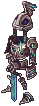
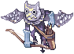
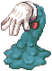
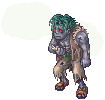
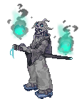
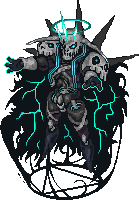
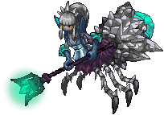
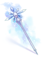
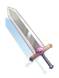

Abyss Glast Heim
Jump to navigation
Jump to search
- For the lv130 instance that gives access to Temporal Boots, see Old Glast Heim. For other uses, see Glast Heim.
Abyss Glast Heim is the latest addition to the hub of Old Glast Heim.
It's considered an end game dungeon, requiring anyone that wishes to enter to be at least level 175. Being in a party and having appropriate equipment is also recommended.
Besides being a good leveling place, it's possible to obtain new cards and a bunch of new end game weapons.
Access

After obtaining at least level 175, there're two ways to access the dungeon:
- Via Mage Nillem NPC by using the Warper NPC, selecting Instances and then Old Glast Heim. Talk to Mage Nillem (189, 272) a bit to the left from where you spawn and select Let's go!
- Using the Warper NPC, selecting Dungeons and then Abyss Glast Heim.
Exp Quests
Mage Nillem has three exp quests if you offer to Share discoveries with him. Feel free to use them to get your level 185 faster.
- Nothingness
- Kill 20 Contaminated Raydrics and 20 Contaminated Raydric Archers.
- Freezing
- Kill 5 Freezing Gargoyles and 5 Prison Breakers.
- Mirror-like
- Kill 10 Ice Ghosts and 10 Flame Ghosts.
Monsters
| Image | Name | Level | HP | Size / Race / Element |
|---|---|---|---|---|
|  | Contaminated Raydric | 185 | 2,372,683 | Medium / Demi-Human / Dark 3 |
| Contaminated Raydric Archer | 184 | 2,355,718 | Medium / Demi-Human / Dark 3 | |
|  | Frozen Gargoyle | 186 | 2,377,139 | Medium / Demon / Water 3 |
|  | Contaminated Sting | 180 | 2,297,907 | Medium / Formless / Earth 3 |
|  | Prison Breaker | 186 | 2,375,279 | Medium / Demi-Human / Undead 2 |
|  | Contaminated Wanderer | 187 | 2,387,582 | Medium / Demon / Wind 2 |
| Ice Ghost | 189 | 2,418,315 | Medium / Demon / Water 3 | |
| Flame Ghost | 189 | 2,410,282 | Medium / Demon / Fire 3 | |
|  | Corrupted Dark Lord 
|
194 | 74,476,822 | Large / Demon / Undead 3 |
|  | Corrupted Spider Queen
|
195 | 74,623,473 | Medium / Demon / Dark 3 |
Obtainable Equipment
As mentioned in the release patch notes, currently these gears do not have their intended enchants, pending implementation.
The following drops are considered party drops:
- Monster(s) show them when you use @mi, if it isn't a MVP, right after their normal drops.
- When you use @wd for them, if it isn't a MVP, you will have a warn about them.
- Items are rolled individually per party member.
- Equipment will drop pre-identified.
- Any type of Bubble gum will not affect the drop rate of these items.
| Image | Name | Type | Description |
|---|---|---|---|
| Hellfire Staff [2] | One-handed Rod |
| |
|  | Icicle Staff [2] | One-handed Rod |
|
| Royal Knight's Lance [2] | Two-handed Spear |
| |
|  | Royal Knight's Broadsword [2] | Two-handed Sword |
|
| Prisoner's Diary [2] | Book |
|
Cards
| Card | Type | Description |
|---|---|---|
| Armor Card |
| |
| Weapon Card |
| |
| Shield Card |
| |
| Armor Card |
| |
| Garment Card |
| |
| Weapon Card |
| |
| Weapon Card |
| |
| Weapon Card |
|